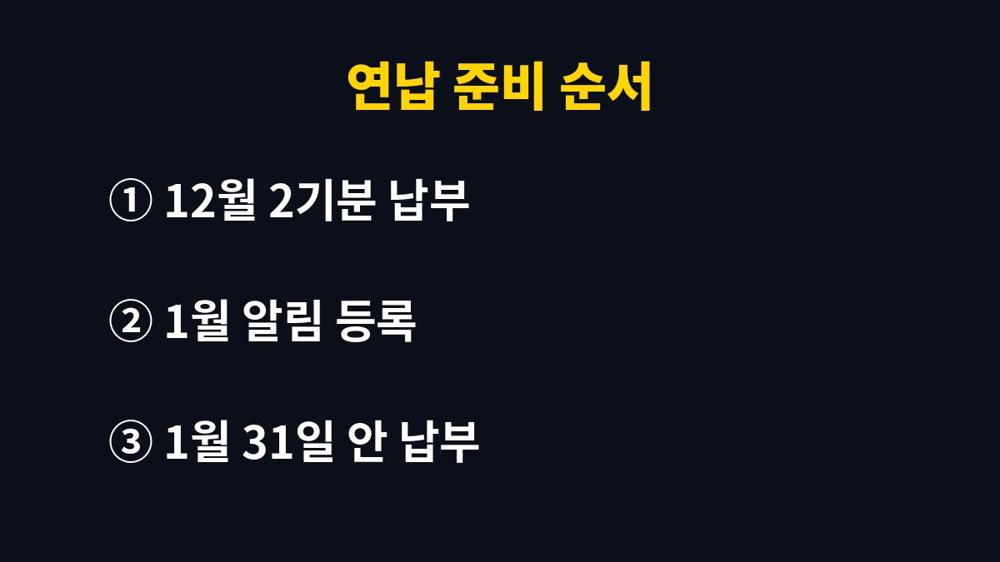

이 글은 12월 자동차세 고지서를 받고 나서야 연납을 떠올리는 사람을 위해 쓴 글이다.
자동차세 연납은 이른 달에 신청할수록 공제가 커서, 12월 납부를 마친 뒤 1월 신청 기간을 미리 달력에 적어 두는 것이 핵심이다.
2026년 11월 기준 지자체 지방세 일정과 위택스 안내를 바탕으로, 사업과 육아를 같이 하며 세금 날짜를 자주 놓치던 내가 바꾼 방법을 정리했다.
자동차세는 1년 세금을 두 번에 나눠 내는 구조라 6월과 12월에 고지서가 온다.
지자체 지방세 일정에는 1기분이 6월 16일부터 30일까지, 2기분이 12월 16일부터 31일까지로 안내되어 있다.
나는 오랫동안 이 두 번의 고지서만 처리하면 끝이라고 생각해 왔다.
연납은 1년 치 자동차세를 한 번에 미리 내고 일정 비율을 공제받는 제도다.
신청한 사람에게만 적용되기 때문에 가만히 있으면 고지서대로 두 번 나눠 내게 된다.
쇼핑몰 연말 정리와 아이들 방학 준비가 겹치는 시기라 1월이 지나서야 이 제도를 떠올린 해가 많았다.
연납은 1월, 3월, 6월, 9월에 신청할 수 있고 각 달의 말일까지 내면 된다.
지자체 안내를 보면 신청하는 달이 늦을수록 공제 비율도 작아진다.
공제율은 지방세법 개정에 따라 해마다 달라져 왔기 때문에 나는 숫자를 외우지 않고 신청할 때 위택스에서 그해 비율을 확인한다.
6월이나 9월에 신청하면 남은 기간에 해당하는 세금만 미리 내는 방식이다.
차를 팔거나 폐차해 이전이나 말소가 생기면 일할 계산으로 정리된다는 점도 지자체 안내에 나와 있다.
그래서 연납 뒤에 차를 바꿀 계획이 있어도 지자체에 확인만 하면 된다는 것을 알고 마음이 편해졌다.
| 신청 달 | 납부 기한 | 공제 크기 |
|---|---|---|
| 1월 | 1월 31일까지 | 가장 큼 |
| 3월 | 3월 31일까지 | 1월보다 작음 |
| 6월 | 6월 30일까지 | 3월보다 작음 |
| 9월 | 9월 30일까지 | 가장 작음 |
요즘은 12월 고지서를 납부하는 날 휴대폰 달력에 1월 연납 알림을 같이 넣어 둔다.
납부를 마친 직후라 세금 생각이 가장 또렷할 때 다음 할 일을 정해 두는 방식이다.
알림 하나 덕분에 1월 신청을 놓치는 일이 없어졌다.
1인 사업을 하다 보니 연초에는 사업 관련 신고와 정산이 몰려 현금이 빠듯하게 느껴질 때가 있다.
그래서 연납할 금액은 12월에 미리 생활비 통장에 따로 떼어 두었다.
한 번에 내는 금액이 커 보여도 미리 준비해 두니 부담이 훨씬 줄었다.
우리 집 차 말고도 부모님 차 연납을 함께 챙겨 드린 적이 있다.
위택스에서는 본인 인증 뒤 내 차량의 세액을 조회할 수 있어 신청 화면까지 오래 걸리지 않았다.
다만 차량 명의자 기준으로 처리되니 가족 차는 명의자가 직접 하거나 옆에서 함께 확인하는 편이 안전하다.
아래 순서는 내가 12월부터 1월까지 실제로 하는 흐름이다.
처음 하는 사람도 순서대로만 하면 어렵지 않게 마칠 수 있다.

자동차세 연납은 특별한 요령보다 날짜를 기억하는 것이 전부인 제도다.
12월 고지서를 내는 날 1월을 함께 예약해 두면 바쁜 연초에도 놓치지 않는다.
지역과 해마다 기준이 달라질 수 있으니 신청 전에 위택스와 지자체 안내를 꼭 확인하길 바란다.
다음 글에서는 중고차를 팔 때 미리 챙길 서류와 순서를 정리할 예정이다.
※ 2026년 기준 공공기관 안내와 개인 경험을 바탕으로 정리한 글이며, 차종과 연식에 따라 기준이 다를 수 있어 차량 설명서와 공식 안내를 함께 확인하길 바란다.